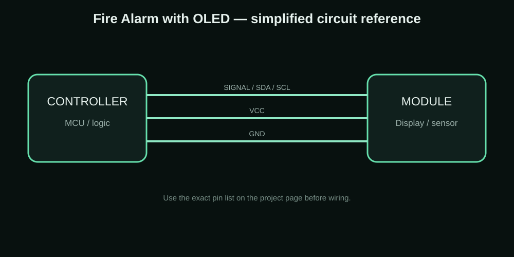

Arduino UNO Fire Alarm with Flame Sensor + OLED
A small fire-alarm prototype using an Arduino UNO, flame sensor, buzzer and 0.96-inch OLED display.


The idea behind the project
I made this as a simple demonstration of combining a sensor, an alarm output and an OLED status screen. The OLED makes the project easier to understand because the user can see the current state instead of relying only on the buzzer.
Components I used
| Component | Purpose |
|---|---|
| Arduino UNO | Main controller |
| Flame sensor | Detects flame/light response |
| 0.96-inch SSD1306 OLED | Shows alarm status |
| Buzzer | Audible warning |
| Breadboard + jumper wires | Prototype wiring |
Connections
| Connection | Details |
|---|---|
| OLED SDA | UNO A4 |
| OLED SCL | UNO A5 |
| OLED VCC | Module-rated supply |
| OLED GND | UNO GND |
| Flame sensor output | Arduino digital/analog input used by the sketch |
| Buzzer | Arduino output pin used by the sketch |
How I built and tested it
- Power the Arduino and initialize the OLED.
- Read the flame sensor output continuously.
- Compare the reading with the alarm condition in the sketch.
- Show the normal or alarm message on the OLED.
- Turn the buzzer on when the alarm condition is detected.
- Return to the normal state when the sensor reading returns to the expected range.
Problems, limits and things to check
Sensor modules can behave differently depending on their adjustment and surrounding light. The threshold should be tested with the actual module instead of copying a value blindly. This is a prototype/learning project and should not be treated as a certified fire-safety system.
What this project can teach you
- Arduino sensor learning
- OLED status displays
- Basic alarm prototypes
- School and maker demonstrations
Downloads
The project ZIP keeps the available project resources together. For a new build, check the code, wiring and board pinout before uploading.
Download Project ZIP